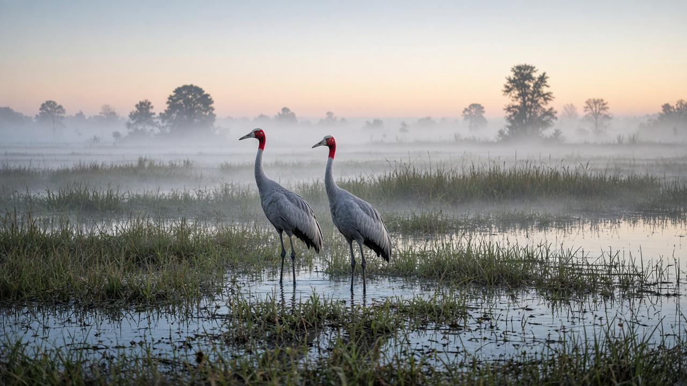
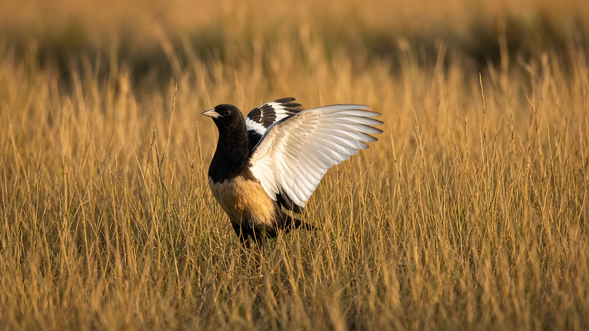
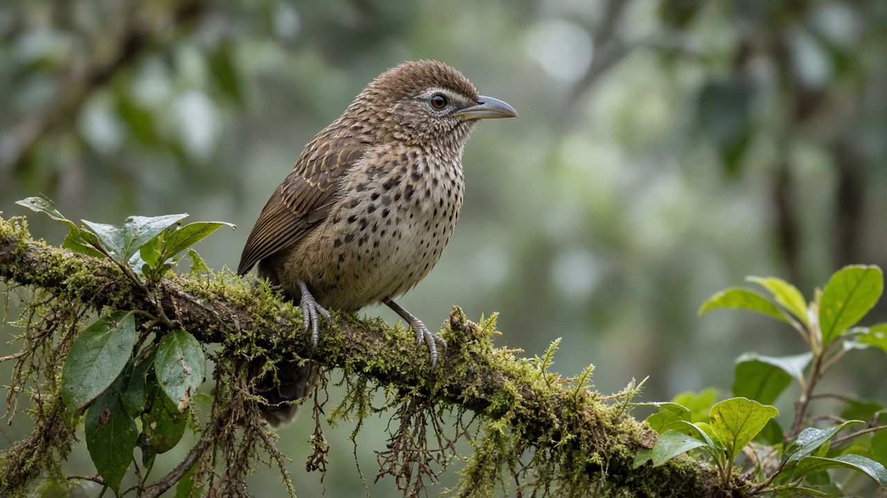

Endangered Birds of Nepal
Published on August 13, 2026

Nepal is one of the world’s premier birdwatching destinations, with more than eight hundred recorded species spanning the Terai wetlands, mid-hill forests, and high Himalayan valleys. Many of these birds are now endangered because of wetland drainage, grassland conversion, pesticide use, hunting, and the loss of nesting and roosting sites. Birds are sensitive indicators of environmental health, so their decline often reveals broader problems in agriculture, water management, and forest conservation.
Some of the most threatened birds in Nepal include the Bengal florican, sarus crane, white-rumped vulture, slender-billed vulture, red-headed vulture, and the spiny babbler, which is found only in Nepal. The Bengal florican depends on tall grasslands in the Terai, while the sarus crane requires undisturbed wetlands and agricultural landscapes. Vultures declined dramatically across South Asia after veterinary use of diclofenac poisoned cattle carcasses that vultures fed upon. Conservation breeding centers, vulture restaurants, and bans on harmful drugs have helped some populations stabilize. The spiny babbler, Nepal’s only endemic bird species, remains vulnerable to habitat degradation in the Kathmandu Valley and surrounding hills.
Protecting endangered birds in Nepal requires habitat restoration, community awareness, and stronger enforcement against trapping and trade. Ramsar wetlands, community forests, and protected area buffer zones provide essential refuge for migratory and resident species alike. Bird conservation also supports ecotourism and scientific research, helping local communities see birds as living assets rather than resources to exploit. With coordinated action, Nepal can safeguard its avian heritage for future generations.

नेपाल विश्वका प्रमुख चरा अवलोकन गन्तव्यमध्ये एक हो, जहाँ तराईका सिमसार, मध्य पहाडका वन र उच्च हिमाली उपत्यकामा आठ सयभन्दा बढी दर्ता भएका प्रजाति पाइन्छ। वासस्थान सुक्खा, घाँसेमैदान परिवर्तन, कीटनाशक प्रयोग, शिकार र गुँड तथा बासस्थानको ह्रासका कारण धेरै चरा लोपोन्मुख भएका छन्। चरा वातावरणीय स्वास्थ्यका संवेदनशील सूचक हुन्, त्यसैले तिनको ह्रासले प्रायः कृषि, पानी व्यवस्थापन र वन संरक्षणमा ठूला समस्याहरू देखाउँछ।
नेपालका सबैभन्दा खतरामा परेका चराहरूमा बंगाल फ्लोरिकन, सारस गरुड, सेतो पृष्ठ भएको गिद्ध, पातलो चाँच भएको गिद्ध, रातो टाउको भएको गिद्ध र नेपालमा मात्र पाइने काँडा भँगेरा समावेश छन्। बंगाल फ्लोरिकनले तराईका अग्ला घाँसेमैदानमा निर्भर गर्छ, भने सारस गरुडले अविक्षित सिमसार र कृषि परिदृश्य चाहिन्छ। दक्षिण एसियामा पशु चिकित्सामा प्रयोग हुने एक औषधिका कारण गाईको मासु खाने गिद्धहरूको संख्या निकै घट्यो। संरक्षण प्रजनन केन्द्र, गिद्ध भोजनालय र हानिकारक औषधि प्रतिबन्धले केही जनसंख्या स्थिर बनाउन मद्दत गरेको छ। नेपालको एक मात्र स्थानिक चरा प्रजाति काँडा भँगेरा काठमाडौं उपत्यका र आसपासका पहाडमा वासस्थान क्षयका कारण संवेदनशील छ।
नेपालमा लोपोन्मुख चरा संरक्षणका लागि वासस्थान पुनर्स्थापना, सामुदायिक चेतना र चरा पकड र व्यापार विरुद्ध कडा कार्यान्वयन आवश्यक छ। रामसार सिमसार, सामुदायिक वन र संरक्षित क्षेत्रका बफर क्षेत्रले प्रवासी र स्थानीय प्रजातिका लागि आवश्यक आश्रय प्रदान गर्छन्। चरा संरक्षणले पर्यावरण पर्यटन र वैज्ञानिक अनुसन्धानलाई पनि समर्थन गर्छ, जसले स्थानीय समुदायलाई चरालाई दोहन गर्ने स्रोत होइन, जीवित सम्पदा झैँ हेर्न मद्दत गर्छ। समन्वित कार्यबाट नेपालले आफ्नो चरा सम्पदा भविष्यका पुस्ताका लागि सुरक्षित राख्न सक्छ।

नेपाल विश्व के प्रमुख पक्षी अवलोकन गंतव्यों में से एक है, जहाँ तराई के दलदलीय क्षेत्र, मध्य पहाड़ों के वन और उच्च हिमाली घाटियों में आठ सौ से अधिक दर्ज प्रजातियाँ पाई जाती हैं। आवास सुखाने, घास के मैदानों का परिवर्तन, कीटनाशकों का प्रयोग, शिकार और घोंसला तथा बास स्थलों के ह्रास के कारण कई पक्षी लुप्तप्राय हो गए हैं। पक्षी पर्यावरणीय स्वास्थ्य के संवेदनशील सूचक हैं, इसलिए उनकी गिरावट अक्सर कृषि, जल प्रबंधन और वन संरक्षण में व्यापक समस्याओं को दर्शाती है।
नेपाल के सबसे खतरे में पड़े पक्षियों में बंगाल फ्लोरिकन, सारस, सफेद पृष्ठ वाला गिद्ध, पतले चोंच वाला गिद्ध, लाल सिर वाला गिद्ध और केवल नेपाल में पाया जाने वाला काँटेदार भँगेरा शामिल हैं। बंगाल फ्लोरिकन तराई के ऊँचे घास के मैदानों पर निर्भर करता है, जबकि सारस को अविक्षित दलदलीय क्षेत्र और कृषि परिदृश्य चाहिए। दक्षिण एशिया में पशु चिकित्सा में प्रयुक्त एक दवा के कारण गाय के मांस खाने वाले गिद्धों की संख्या में भारी गिरावट आई। संरक्षण प्रजनन केंद्र, गिद्ध भोजनालय और हानिकारक दवाओं पर प्रतिबंध ने कुछ आबादी को स्थिर करने में मदद की है। नेपाल की एकमात्र स्थानिक पक्षी प्रजाति काँटेदार भँगेरा काठमांडू घाटी और आसपास के पहाड़ों में आवास क्षय के कारण संवेदनशील है।
नेपाल में लुप्तप्राय पक्षियों की रक्षा के लिए आवास बहाली, सामुदायिक जागरूकता और पक्षी पकड़ व व्यापार के विरुद्ध कड़ा प्रवर्तन आवश्यक है। रामसार दलदलीय क्षेत्र, सामुदायिक वन और संरक्षित क्षेत्र के बफर क्षेत्र प्रवासी और स्थानीय प्रजातियों के लिए आवश्यक आश्रय प्रदान करते हैं। पक्षी संरक्षण पर्यावरण पर्यटन और वैज्ञानिक अनुसंधान का भी समर्थन करता है, जिससे स्थानीय समुदाय पक्षियों को शोषण के स्रोत नहीं, जीवित विरासत के रूप में देखते हैं। समन्वित कार्य से नेपाल अपनी पक्षी विरासत को भविष्य की पीढ़ियों के लिए सुरक्षित रख सकता है।
Endangered Birds of Nepal
- Bengal florican
- Sarus crane
- White-rumped vulture
- Slender-billed vulture
- Red-headed vulture
- Spiny babbler
- Greater adjutant stork
- Black-necked stork
- Imperial eagle
- Cheer pheasant